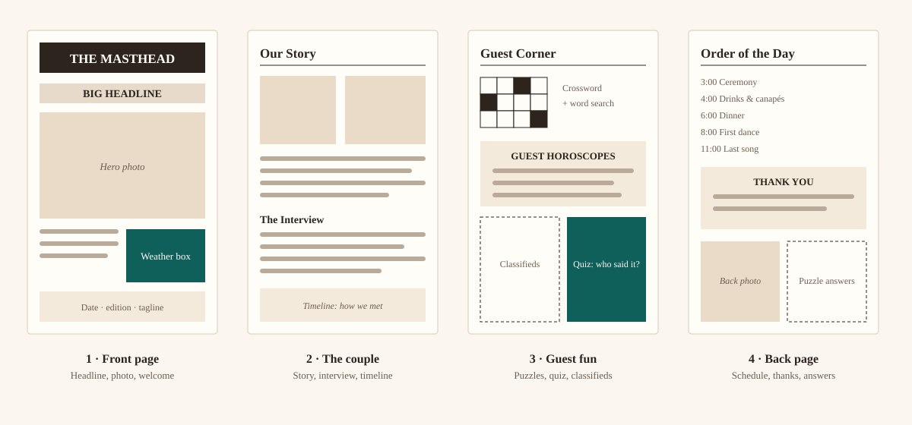

Topics in this guide
A wedding newspaper is a one-off printed paper, laid on every table or handed out at the door, that tells your story in the style of a daily. It has a masthead, a front-page headline, a crossword, a horoscope column and a few classifieds. Guests read it while they wait for the entrées, then fold it into a bag and take it home. It is one of the few wedding extras that works as a guest activity, a programme and a keepsake at the same time.
This guide walks through the whole job, from deciding if it's right for you to the file you send the printer. It is written for couples with a modest budget and a few free evenings, not a design degree.
What a wedding newspaper does well
- Fills the gaps. The stretch between the ceremony and dinner is where guests scroll their phones. A puzzle and a quiz give them something to share.
- Replaces several printed items. The order of the day, a thank-you note and a menu can all live inside it, so you may not need a separate programme.
- Introduces people. Guests from your side meet guests from theirs through a "how we met" story and a who's-who.
- Lasts. Unlike a favour, a paper full of jokes and photos tends to be kept.
It is a poor fit if you can't commit to a firm print deadline, or if your guest list is still changing a week out. Printing is the one part you can't undo, so be honest about that before you start.
Step 1: Choose a format and page count

Four pages is the sweet spot. It's one sheet folded in half, quick to write and cheap to print. Two pages (a single double-sided sheet) works for a casual wedding. Eight pages is only worth it if you have a lot of photos and a friend with plenty of time.
For size, A3 folded to A4 is easy to print almost anywhere and is a comfortable read on a table. A true broadsheet look needs a printer that offers newsprint stock, so ask before you design around it.
Step 2: Pick a name and a tone
The name does most of the work. Use a place, a surname or a joke: The Harbour Times, The Nguyen-Clarke Chronicle, The Daily Yes. Then pick a tone and hold it:
- Classic broadsheet: serif type, dry headlines, a straight face.
- Tabloid: big headlines, puns, "exclusive" interviews.
- Gentle and warm: fewer jokes, more photos, short notes of thanks.
Write for the least-in-the-know guest. Skip in-jokes that only your flatmates would understand, or explain them in one line.
Step 3: Plan the sections
You don't need every section below. Choose five to seven that suit your crowd.
- Front-page headline and photo. "Two Become One, Dinner at Six" is a fine formula: the news plus a small, human detail.
- Our story. 250 to 350 words on how you met and got engaged, plus a short timeline.
- The interview. Ask each other the same five questions and print the answers side by side. Try "Who said I love you first?" and "What is the other person's worst habit?"
- Order of the day. Times, locations, and anything guests need to know, such as where to find the bathrooms or when the bar closes.
- Meet the wedding party. One line each, written as a mock profile.
- Crossword or word search. Clues that use names, places and shared jokes.
- Horoscopes. One gentle line per table or per group of guests, for example "Aunt Maria: today is a good day for dancing."
- Classifieds. Short, silly ads. "Wanted: someone to teach Dad the Nutbush."
- Weather and sport. A forecast box and a tongue-in-cheek results line.
- Thank you. A short, sincere note on the back page.
Keep one rule: every section should be either useful or fun, and the best ones are both.
Step 4: Gather the content
This is the slow part, so start early. Make a shared document and ask for pieces rather than writing everything yourselves.
- Photos. Pick 6 to 10. Use originals, not screenshots, and check each is at least 1500 pixels on the long side so it prints sharply.
- Guest contributions. Ask the wedding party for a line each, or ask a parent for a childhood story. Keep it light and get their consent before you print anything personal.
- Facts. Confirm names, spellings, ceremony times and venue address. These are the errors guests notice.
- Sensitive topics. Leave out exes, family tension and anything a grandparent would not want read aloud.
Step 5: Build the layout
Free or low-cost tools are all you need. Canva has newspaper templates, Google Docs and Word can do a clean two-column page, and Affinity Publisher or InDesign suit anyone who already owns them. Whichever you pick, follow these basics:
- Set the page size first, before you add anything, and match what your printer asks for.
- Add a 3 mm bleed if any colour or photo touches the edge, and keep text 10 mm inside the trim.
- Limit your fonts to two: a serif for headlines and body, and a plain sans-serif for small labels.
- Use columns. Three narrow columns read like a newspaper and keep line length comfortable. Body text at 9 to 10.5 pt works in print.
- Leave white space. A crowded page reads as homework.
- Check contrast. Dark text on a light background prints best. Avoid text over busy photos.
Step 6: Proof it, twice
Print a draft on your home printer at full size and read it on paper, since typos hide on screens. Ask two people who didn't write it to check names, times and the crossword answers. Then let it sit for a day and read it once more. Also check that the crossword is actually solvable, because an unsolvable puzzle is the most common complaint.
Step 7: Print it
Get quotes from a local print shop and an online printer, and ask each the same questions: which paper stocks are available, whether they fold and trim, what the turnaround is, and whether they will send a proof. Prices vary a lot with quantity, paper and finish, so use quotes, not rules of thumb.
- Quantity: one per table, plus one for each guest if you want it as a keepsake, plus a handful of spares. Order against your confirmed headcount.
- Paper: a lightweight uncoated stock feels newspaper-like and is cheaper. Glossy suits photo-heavy editions.
- Proof: approve a physical or PDF proof before the full run.
- Delivery: have it arrive at least a week before the wedding, to a person who will be home.
A timeline you can copy
| When | What to do |
|---|---|
| 10 to 8 weeks out | Choose the format, name and sections. Ask people for contributions. |
| 8 to 6 weeks out | Gather photos, write the story and interview, draft the puzzles. |
| 6 to 4 weeks out | Build the layout and print a home draft. |
| 4 to 3 weeks out | Proofread, get quotes, confirm the final guest count. |
| 3 to 2 weeks out | Send the file to the printer and approve the proof. |
| The week before | Receive the delivery, check the count and hand a box to your coordinator or venue. |
Common mistakes
- Printing before the guest list settles. A wrong name in a horoscope is a small disaster.
- Too much text. Guests skim. Short items win.
- Forgetting to tell the venue. Let them know when it arrives and where it goes on the table.
- Leaving the puzzle answers out. Put them on the back page, upside down if you like.
- Leaving it all to the last fortnight. The writing is quick, and the waiting on contributions is not.
Keeping it in the plan
A newspaper touches your guest list, timeline, budget and printer quote, and a change to one means a change to the others. In your OmnyID workspace those live in the same plan, so a late RSVP or a shifted ceremony time shows up where you need it, and you can see the print deadline next to everything else you owe.